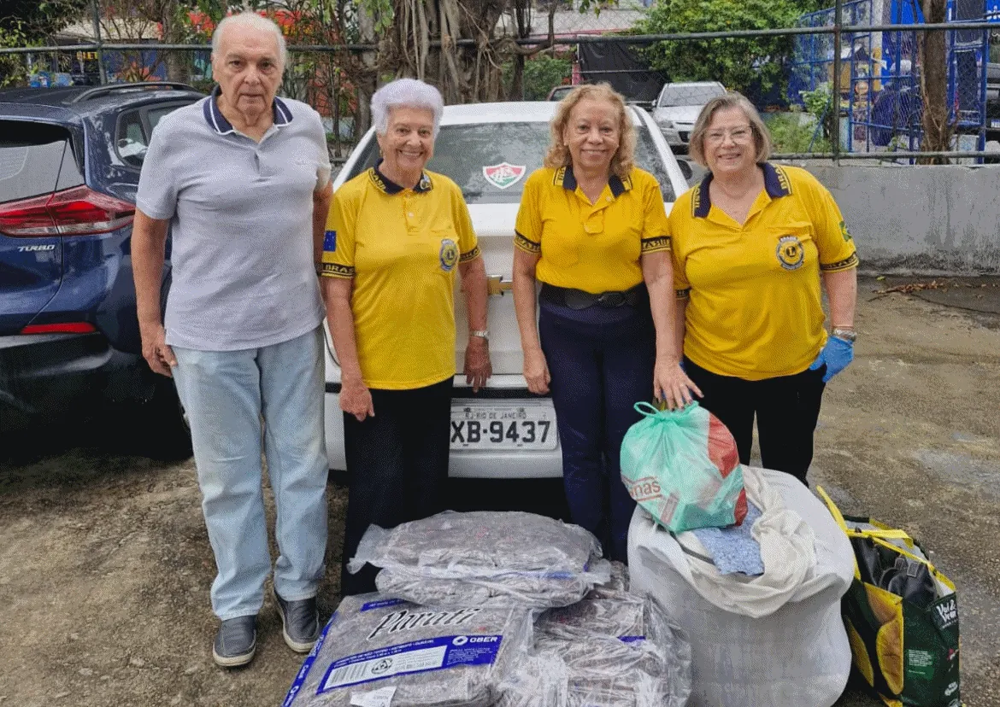

O clube
O LC RJ Sernambetiba foi fundado em 25 de junho de 2001, data de expedição de sua Carta Constitutiva, e consolidou-se como uma importante força de serviço comunitário no Distrito LC-1.
O clube construiu sua identidade fortemente ligada à região litorânea da Zona Oeste do Rio de Janeiro, com sede administrativa registrada historicamente no entorno da Avenida Sernambetiba, na Barra da Tijuca.
Ao longo de sua trajetória, a agremiação tem alinhado as diretrizes do leonismo internacional às demandas locais da sociedade carioca.
Cidadania e infância
O histórico de atividades do clube revela um forte engajamento com ações de cidadania e apoio à infância. Destacam-se as realizações do Programa Lions Cidadão, que levou serviços e conscientização a espaços públicos da região, como o Barra Square e o Centro Educacional Suzano Costa, no Jardim Maravilha, em Guaratiba.
O apoio às crianças em situação de vulnerabilidade também é um marco da instituição, evidenciado pelas campanhas e festas solidárias voltadas aos pacientes da Casa de Apoio às Crianças com Câncer Santa Teresa. O clube também capitaneou projetos de saúde e bem-estar, a exemplo do Grêmio Sorriso, Projeto Transformar Sorrindo.
Juventude
Para garantir a renovação das lideranças sociais, o RJ Sernambetiba investiu fortemente no desenvolvimento da juventude. A fundação e o apadrinhamento do Leo Clube do Sernambetiba exemplificam esse esforço.
Por meio de parcerias com instituições educacionais, como o Colégio Veiga de Almeida, o clube empossou dezenas de jovens no movimento leoístico, integrando estudantes na organização de campanhas solidárias.
Essas iniciativas reiteram a vocação do clube não apenas para o serviço humanitário imediato, mas para a formação ética e cidadã de novas gerações de voluntários.
Ação Social do Terreirão

A Ação Social do Terreirão é realizada com a união de 10 Lions Clubes, testemunho vivo do espírito leonístico, marcado pela solidariedade, pelo serviço desinteressado e pela dedicação ao bem-estar da comunidade.
Unidos pelo lema "Nós Servimos", esses clubes oferecem um dia inteiro de cuidado, acolhimento e esperança: saúde da visão, prevenção ao câncer de mama, dermatologia, bem-estar e cidadania, tudo custeado pelos clubes associados.